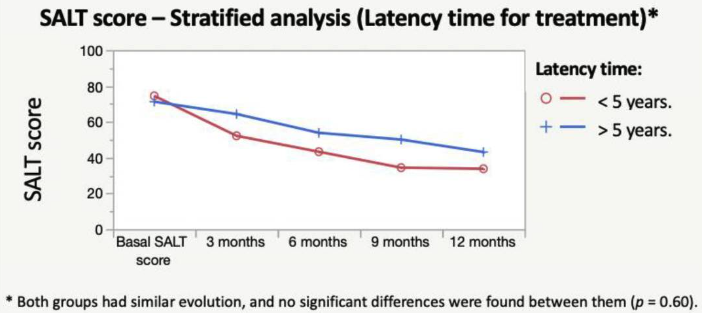

Alopecia Areata
Table of Contents
- 1. Social aspects of Alopecia Areata
- 2. Treatment
- 2.1. Corticosteroids
- 2.2. Contact immunotherapy
- 2.3. Janus Kinase (JAK) Inhibitors
- 2.3.1. Baricitinib (Olumiant)
- 2.3.2. Ritlecitinib (Litfulo)
- 2.3.3. Tofacitinib
- 2.3.4. Factors influnce response
- 2.3.5. Topical JAK inhibitors
- 2.3.6. Kids under 12
- 2.3.7. What to expect
- 2.3.8. Treatment is likely necessary for maintenance of hair regrowth
- 2.3.9. Decreasing the dose after complete hair regrowth will make it likely to losing the hair again
- 2.3.10. Failing in one JAK inhibitor does not mean the others won't work
- 2.3.11. Side effects
- 2.4. Minoxidil
- 2.5. Dupilumab (Dupixent)
- 3. Comorbidities
- 4. Causes
- 5. Second order complications
- 6. Regrowth
- 7. Symptoms
- 8. Clouston syndrome
About Alopecia Areata (AA) and Alopecia Universalis (AU). These terms are only used to describe the severity, but it is the same disease.
Immune cells around the hair follicle causes hairs to stop growing.
Larow, Jo Anne And Mysliborski, Judith And Rappaport, I. Paul And Rouleau, Guy A. And Carlson, J. Andrew (2001) studies a single case. They highlight that the diagnostic needs to exclude the case of Clouston syndrome.
Pediatric alopecia areata affects 1 in every 1000 (source, Mckenzie, Paige L. And Maltenfort, Mitchell And Bruckner, Anna L. And Gupta, Deepti And Harfmann, Katya L. And Hyde, Patrice And Forrest, Christopher B. And Castelo-Soccio, Leslie (2022)).
Mckenzie, Paige L. And Maltenfort, Mitchell And Bruckner, Anna L. And Gupta, Deepti And Harfmann, Katya L. And Hyde, Patrice And Forrest, Christopher B. And Castelo-Soccio, Leslie (2022) suggests that it affects more asian and hispanic.
1. Social aspects of Alopecia Areata
Source says that up to 5 years there isn't much social impact as children don't pay attention to their physical aspect and the other are not likely to notice it.
THe issues start later (Theresa Christensen And Jessica S. Yang And Leslie Castelo-Soccio (2017)):
48% of teens are embarrassed about their hair loss. 7% said that their hair loss affected their friendships. 59% said that they have been stared at or people have talked about them. 52% said that their hair loss made them limit their activities.
…13% of children aged 12 to 14 years and 40% of teens from 15 to 19 have been bullied because of their hair loss.
Source provides tips on how to deal with bullying and what parents can do to help their children.
2. Treatment
There is no cure to Alopecia Areata, but treatment can help on hair regrowth.
According to Khan Mohammad Beigi, Pooya (2018), less than 10% of the patients with Alopecia Areata Universalis recover.
Yashpal Manchanda And Ramkumar Ramamoorthy (2021) reviews a couple of different treatments, show their response rate, effectiviness, and side effects (link).
Systemic steroids might not be a good idea for AU (C. Stefanaki And G. Kontochristopoulos And E. Hatzidimitraki And A. Stergiopoulou And A. Katsarou And V. Vosynioti And E. Remountaki And D. Rigopoulos (2021)):
Apart from systemic steroids for a short period of time (6 weeks), no other systemic agents were tried in our study and those were reserved for severe cases. However, 2/5 of the children treated with systemic steroids did not have a cosmetically acceptable hair regrowth in a 3-month follow-up. Both had alopecia totalis. Patients with AA have been found to respond better to systemic steroids than patients with alopecia totalis, and a 60% response rate has been reported [9, 24, 25, 26] but most fail to maintain a sustainable result.
Patientsd younger than 4 have poor prognosis, but better treatment response (to topical corticosteroids) Lim, Ji-Hoon And Kwon, Soon-Hyo And Sim, Woo-Young And Lew, Bark-Lynn (2024). The article has many results for the treatment in young patients.
2.1. Corticosteroids
According to Rastaghi, F. And Kaveh, R. And Yazdanpanah, N. And Sahaf, A. S. And Ahramyanpour, N. (2023), there is no difference in outcomes and side effects between intravenous and oral therapy. Positive prognostic for recent onset (<6 months), a younger age (<10 years), and the multifocal type of AA. Negative pronostic for:
Patients with a past medical history of atopy, nail pitting, or thyroid disease and those with severe forms of AA like alopecia totalis and alopecia universalis had the least improvement
2.1.1. Topical corticosteroids
Advantan (aceponato de metilprednisolona / methylprednisolone aceponate). It should exceed 4 weeks of treatment.
A short application period typicall goes from 2-4 weeks. There are risks of applying it, like making the skin thinner and getting corticosteroids into the blood stream. There are side effects like compromising the cortisol or delaying growth (for children).
Efficacy, from Friedli, A. And Labarthe, M. P. And Engelhardt, E. And Feldmann, R. And Salomon, D. And Saurat, J. H. (1998):
In patients with universalis and totalis AA (n = 15), no total regrowth was observed initially; 8 patients had no response, and 3 showed 50% to 90% regrowth at I month, with subsequent improvement at 3 and 6 months. In 4 patients who did not show an initial response, a significant (90% to 100%) delayed regrowth was observed between 9 and 16 months after the pulse therapy.
From Assouly, P. And Reygagne, P. And Jouanique, C. And Matard, B. And Marechal, E. And Reynert, P. And Bachelez, H. And Dubertret, L. (2003):
Results: Ophiasic alopecia areata did not respond to treatment. A quarter of patients presenting universal alopecia had a good response (higher than 80 p. 100) followed by a relapse in half the cases. Half of the patients presenting alopecia totalis had a good response, which was maintained three times out of four. Multifocal alopecia areata seems the best indication since the patients under study presented a good response in 63.8 p. 100 of cases (78 p. 100 when it was a first episode and 90.5 p. 100 if the treatment had been started in less than 3 months before). The repetition of the pulses did not appear to increase the number of responders.
From Nakajima, T. And Inui, S. And Itami, S. (2007):
Method: A total of 139 severe AA patients aged >15 years were included in this study. The duration from the onset of active hair loss was within 12 months for 125 (89.9%) of those patients.
Results: Of the patients, 72.7% had hair loss on > 50% of their scalp area. Among the recent-onset group (duration of AA < or = 6 months), 59.4% were good responders (> 75% regrowth of alopecia lesions), while 15.8% with > 6 months duration showed a good response. Recent-onset AA patients with less severe disease (< or = 50% hair loss) responded at a rate of 88.0%, but only 21.4% of recent-onset patients with 100% hair loss responded. No serious adverse effects were observed.
Im, M. And Lee, S. S. And Lee, Y. And Kim, C. D. And Seo, Y. J. And Lee, J. H. And Park, J. K. (2011) shows the same factors affecting the efficiency: the less severe the case, the better the chances; the shorter the time between the onset, the better the chance.
The prognostic factors that influenced successful outcome were the disease duration before treatment and the type of alopecia areata. Based on these two factors, a good response was obtained for all types of alopecia areata with a duration of 3months or less before treatment and for the plurifocal type of alopecia areata with a duration of 4-6months. Methylprednisolone pulse therapy is indicated for those alopecia areata patients who fall within our good response group.
2.1.2. Intralesional corticosteroids
2.1.3. Systemic corticosteroids
- Oral corticosteroids
Systemic steroids might not be a good idea for AU (C. Stefanaki And G. Kontochristopoulos And E. Hatzidimitraki And A. Stergiopoulou And A. Katsarou And V. Vosynioti And E. Remountaki And D. Rigopoulos (2021)):
Apart from systemic steroids for a short period of time (6 weeks), no other systemic agents were tried in our study and those were reserved for severe cases. However, 2/5 of the children treated with systemic steroids did not have a cosmetically acceptable hair regrowth in a 3-month follow-up. Both had alopecia totalis. Patients with AA have been found to respond better to systemic steroids than patients with alopecia totalis, and a 60% response rate has been reported [9, 24, 25, 26] but most fail to maintain a sustainable result.
According to S{\'a}Nchez-D{\'i}Az, M And Montero-Vilchez, T And Bueno-Rodriguez, A And Molina-Leyva, A And Arias-Santiago, S (2022), the early onset and hypothyroidism comorbidity decreases the chances of oral corticosteroids pulses (dexamethasone) to be effective:
An overall significant and progressive decrease of the SALT score was found during treatment: SALT-50 response was achieved after 9 months in 51.8% of the patients. Hypothyroidism and early age of onset were predictors of the lack of response to treatment. The treatment combination with oral minoxidil showed no effect on the SALT score reduction. Dexamethasone daily and cumulative dose were associated with a higher percentage of side effects. To conclude, the mini-pulse oral corticosteroids treatment is an effective treatment for AA, although patients with an early onset of the disease and hypothyroidism may not benefit
Shorter time from onset to treatment also appears here as a positive factor for response:

Rastaghi, F. And Kaveh, R. And Yazdanpanah, N. And Sahaf, A. S. And Ahramyanpour, N. (2023) brings many results from different systemic treatments.
- Intravenous corticosteroids
From Senila, S. C. And Danescu, S. A. And Ungureanu, L. And Candrea, E. And Cosgarea, R. M. (2015):
Results: Of 32 patients, 26 (81.3%) reported a clinical response. Four patients (12.5%) showed complete hair regrowth, 6 patients (18.8%) showed >50% hair regrowth, ten (31.3%) had <50% hair regrowth, 6 (18.75%) were non responders, and another 6 patients (18.8%) had relapse after an initial regrowth. Multivariate analysis revealed that patients reporting at the first episode and those with multifocal disease had the best results.
Three positive prognostic factors identified in Friedland, R. And Tal, R. And Lapidoth, M. And Zvulunov, A. And Ben Amitai, D. (2013):
short disease duration (≤6 months), younger age at disease onset (<10 years) and multifocal disease (as opposed to severe, diffuse variants).
Their results:
Results: The sample included 24 children (16 female, 8 male) with a mean age of 8.5 ± 4.6 years at diagnosis; 8 (33%) had multifocal disease,10 (42%) multifocal disease with ophiasis, 4 (17%) alopecia totalis and 2 (8%) alopecia universalis. Nail involvement was noted in 9 patients (38%). Mean duration of disease was 22 ± 27 months. Patients were treated with 8 mg/kg body weight intravenous methylprednisolone on 3 consecutive days at 1-month intervals. After a mean of 5.65 ± 1.95 courses, 9 patients (38%) had a complete response, 7 (29%) a partial response and 8 (33%) no response. Of the 16 responders, 13 (81%) relapsed at 9.5 ± 12 months after the last course; 3 patients had side effects, none of which were severe.
2.2. Contact immunotherapy
Topical irritants, topical immunotherapy
Contact immunotherapy is a medical treatment that involves the application of an irritant substance (often a chemical) to the skin to stimulate the immune system. It is typically used to treat certain skin conditions, particularly alopecia areata, a form of hair loss where the immune system attacks hair follicles.
In the context of alopecia areata, contact immunotherapy works by provoking a mild allergic reaction on the skin, which in turn triggers an immune response that can alter the activity of the immune system. This immune response may help to stop the immune system from attacking the hair follicles, allowing for hair regrowth.
### How it Works:
- A chemical agent, such as diphenylcyclopropenone (DPCP) or squaric acid dibutylester (SADBE), is applied to the affected area of the skin.
- The chemical causes a controlled allergic reaction (contact dermatitis), which is a mild inflammatory response.
- The idea is that the immune system, in responding to this reaction, will shift its focus away from attacking the hair follicles, potentially allowing hair to grow back.
### Effectiveness:
- Contact immunotherapy has been shown to be effective in some patients with alopecia areata, leading to regrowth of hair. However, the treatment doesn’t work for everyone, and it may take several months to see results.
- It is not a permanent cure, and hair may fall out again once the treatment is stopped.
### Risks and Side Effects:
- The treatment can cause side effects like itching, redness, and swelling in the area where the chemical was applied.
- There is a risk of more severe allergic reactions, but these are rare when the procedure is done under medical supervision.
In summary, contact immunotherapy is a treatment aimed at stimulating the immune system in a controlled way to encourage hair regrowth, particularly for conditions like alopecia areata. However, it is important to note that the effectiveness and safety of the treatment should be assessed by a healthcare provider.
2.3. Janus Kinase (JAK) Inhibitors
Is it safe for children? Hamilton, Claire E. And Others (2021):
Phase 1 studies of JAK inhibitors for the treatment of malignancy and inflammatory conditions in children have supported the potential safety of these medications and have provided dosing guidance. Randomized controlled trials in children with AA are ultimately needed to fully establish the efficacy and safety of this drug class for this patient population.
More resources.
They target the immune pathway that is responsible for hair loss in AA. Don't cause hair grow, but go after the immune cells preventint it.
The JAK are proteins that send messages. So when the immune cells blocking the hair follicle need to be replaced, their message to send more immune cells there won't be received and it won't block it anymore.
We need to block first the inflammation, then a hair needs to grow, that's why it takes a couple of months.
Baricitinib (Olumiant): FDA-approved for paitnets 18 and older with severe AA. Ritlecitinib (Litfulo): FDA-approved summer 2023 for patients 12 and older with severe AA
Others, not approved for AA, so they are still "off-label": Xeljanz, Jakafi, Rinvoq, Cibinqo (regardless of the age of patient).
Tofacitinib (?)
2.3.1. Baricitinib (Olumiant)
FDA-Approved for severe AA in patients 18+ in 2022. Two doses: 2 mg or 4 mg daily. Clinical trials still going in children (2024).
Trial result from Brett King And Manabu Ohyama And Ohsang Kwon And Abraham Zlotogorski And Justin Ko And Natasha A. Mesinkovska And Maria Hordinsky And Yves Dutronc And Wen-Shuo Wu And Jill Mccollam And Chiara Chiasserini And Guanglei Yu And Sarah Stanley And Katrin Holzwarth And Amy M. Delozier And Rodney Sinclair (2022), it is for severe AA:
It means that 38% of the patients using 4 mg doses achieved a SALT score of at least 20 in 36 weeks (~9 months).
These other chart Ohsang Kwon And Maryanne M. Senna And Rodney Sinclair And Taisuke Ito And Yves Dutronc And Chen-Yen Lin And Guanglei Yu And Chiara Chiasserini And Jill Mccollam And Wen-Shuo Wu And Brett King (2023) from show it for 52 weeks period (severe AA):
Not everyone responds and it takes a long time.
Examples from clinical trial:

2.3.2. Ritlecitinib (Litfulo)
FDA-approved for severe AA in patients 12+ in 2023. One dose: 50mg daily. JAK3/TEC inhibitor.
Brett King And Xingqi Zhang And Walter Gubelin Harcha And Jacek C. Szepietowski And Jerry Shapiro And Charles Lynde And Natasha A. Mesinkovska And Samuel H. Zwillich And Lynne Napatalung And Dalia Wajsbrot And Rana Fayyad And Amy Freyman And Debanjali Mitra And Vivek Purohit And Rodney Sinclair And Robert Wolk (2023) results:
Which means that the percentage of patients getting at least a SALT of 20 in 24 weeks is 23% and in 48 weeks is 43%.
From Maria Hordinsky And Adelaide A. Hebert And Melinda Gooderham And Ohsang Kwon And Nikolay Murashkin And Hong Fang And Kazumi Harada And Eric Law And Dalia Wajsbrot And Lillian Takiya And Samuel H. Zwillich And Robert Wolk And Hien Tran (2023) (notice 50mg is the dose recommended):

24 weeks: 25%, 48 weeks: 50%.
From King AAD 2022 annual meeting:

2.3.3. Tofacitinib
2.3.4. Factors influnce response
- Baseline severity
- Duration of current episode
Duration of current episode. It is the length of time since the hair loss. Example: 20 year old. First pach: age 10, lost all hair: age 15. Duration of disease is 10 years, duration of current episode is 5 years.
Brett King And Xingqi Zhang And Walter Gubelin Harcha And Jacek C. Szepietowski And Jerry Shapiro And Charles Lynde And Natasha A. Mesinkovska And Samuel H. Zwillich And Lynne Napatalung And Dalia Wajsbrot And Rana Fayyad And Amy Freyman And Debanjali Mitra And Vivek Purohit And Rodney Sinclair And Robert Wolk (2023) (King et al AAD 2023):
Patients with current episodes of less than 4 years respond better.
2.3.5. Topical JAK inhibitors
The clinical trials have not shown significant benefits over placebo.
2.3.6. Kids under 12
Xeljanz is approved for arthritis ages 2+. Olumiant approved in Europe for juvenile arthritis ages 2+.
If used for AA, it is considered off-label. FDA approvals are subject to a specific disease and age.
You can find trials in clinicaltrials.gov
2.3.7. What to expect
Regrowth should start by ~3-4 months Complete scalp hair regrowth over 9-12 months. Scalps responds better/earlier than eyebrowns and eyelashes.
There isn't even a decision to make before 6 months, you need to take it and wait.
2.3.8. Treatment is likely necessary for maintenance of hair regrowth
Only 20% of people who achived regrowth could keep it after 2 years when hey stopped treatment. From King, Brett And Ko, Justin And Kwon, Ohsang And Vañó-Galván, Sergio And Piraccini, Bianca Maria And Dutronc, Yves And Yu, Guanglei And Liu, Chunyuan And Somani, Najwa And Ball, Susan And Mesinkovska, Natasha A. (2024):
Even if you keep it, you will have a little bit of activity and spots.
Hair loss happens weeks/months after stopping it.
2.3.9. Decreasing the dose after complete hair regrowth will make it likely to losing the hair again
Take people from the clinical trial that achieved regrowth.
Big dose changes are bad.
10-20% maintained the hair after a 1 after stopping the treatment.
2.3.10. Failing in one JAK inhibitor does not mean the others won't work
No research, but observations from a Brett King (source).
After the long period of observation, one can increase the dose. Or add minoxidil.
2.3.11. Side effects
Around 27 min in this video there is data about side effects. When there isn't risk factors, it seems safe.
From BAD:
JAK inhibitors carry a risk of infection as a side effect. Tofacitinib can be used to treat patients for other conditions beyond alopecia areata. When tofacitinib has been used in some of these contexts (for example, to treat people with rheumatoid arthritis), it has been linked with higher rates of heart-related events, cancers, blood clots and serious infections. Although it is very unclear whether people treated with tofacitinib or other JAK inhibitors for AA will also be at elevated risk of these conditions, the regulatory authorities have nevertheless issued a ‘box warning’ for doctors and patients to be cautious when using JAK inhibitors for any condition.
About safety of JAK inhibitors, see Maria Hordinsky And Adelaide A. Hebert And Melinda Gooderham And Ohsang Kwon And Nikolay Murashkin And Hong Fang And Kazumi Harada And Eric Law And Dalia Wajsbrot And Lillian Takiya And Samuel H. Zwillich And Robert Wolk And Hien Tran (2023).
2.4. Minoxidil
Topical available. Oral by prescription. More beneficial as an add-on to a treatment.
Pulsed prednisone plus oral minoxidil:
2.5. Dupilumab (Dupixent)
Injectable. FDA-approved for eczema, asthma, and other diseases. Not immunosupressant, favorable for safety profile.
Reports of improvements, but also for worsening AA.
3. Comorbidities
Atopic dermatitis is more common in children up to 10 yeas old.
Vidya Yadav And Vibhu Mendiratta And Shalini Malik And Soumya Tiwari And Kavita Gaur (2024):
Commonly reported association of AU includes autoimmune diseases such as vitiligo, atopic dermatitis, and hypothyroidism;
4. Causes
5. Second order complications
If it affects the eyebrowns, it can generate dry eyes. Some people develop small pits in their nails.
One needs to protect the scalp from the sunlight. It also protects it from scratches.
6. Regrowth
AU has only a 10% chance of full regrowth.
Regrowth usually starts at the centre of the bald patch with fine white hairs that thicken with time and usually regain their natural colour.
…
Depending on the extent of hair loss there is a good chance that, for 4 out of 5 affected people, complete regrowth will occur within 1 year without treatment. There may, however, be further episodes of hair loss in the future. If there is very extensive hair loss from the start, the chances of it regrowing are not as high. Those with more than half the hair lost at the beginning, or with complete hair loss at any stage, have only about a 1 in 10 chance of full recovery. The chances of regrowth are lower in the following:
- young children,
- people with family history of alopecia areata or other autoimmune conditions,
- those with hair loss affecting the hairline at the back of the scalp,
- those with nail disease.
Also, from the same source, AA affects only pigmented follicles, so white hair isn't affected.
7. Symptoms
7.1. SALT
Severity Alopecia Tool (SALT) score. To describe the severity of AA. A 100 is completely without hair.
8. Clouston syndrome
Aka hidrotic ectodermal dysplasia 2 (HED2).
Characterized by partial or total Alopecia Areata, dystrophy of the nails, hyperpigmentation of the skin (specially in the joints), and clubbing of the fingers
Nail Dystrophy: Nails may appear milky white in early childhood and become thick, misshapen, and separated from the nail bed.
Alopecia: Hair may be sparse, brittle, and patchy, potentially leading to total hair loss (alopecia) by puberty.
Palmoplantar Hyperkeratosis: Thickening of the skin on the palms and soles can develop during childhood and worsen with age.
Other features: Hyperpigmentation of the skin, especially over the joints, and clubbing of the fingers can also occur.
It is genetic. Most people with it has an affected parent (source, Wikipedia). It is caused by GJB6 gene.